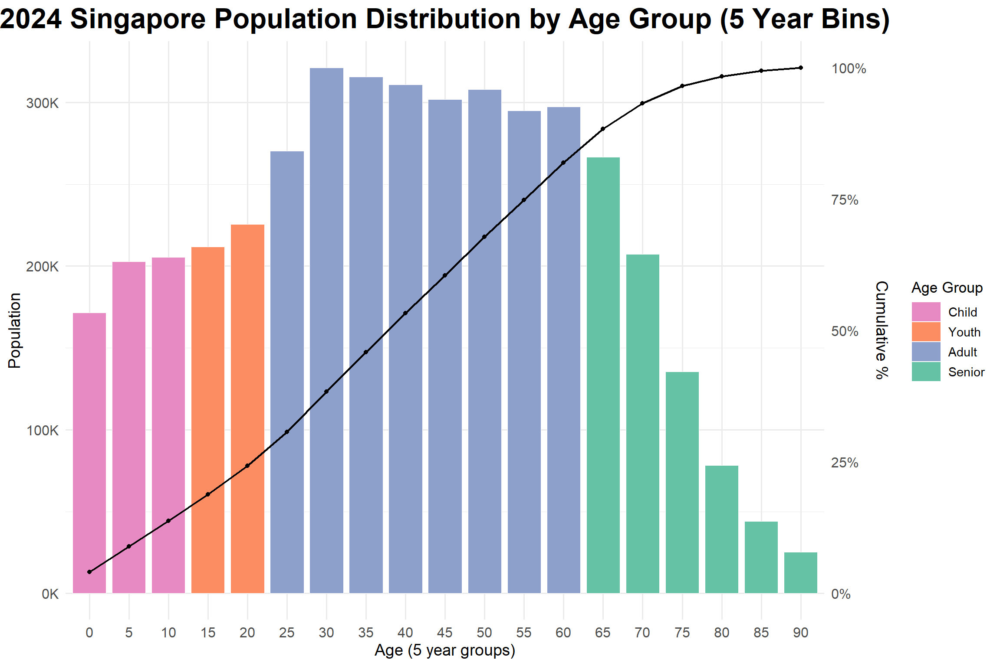

In this Phase 2 assignment, I will select one of my classmate’s Phase 1 visualisations and will evaluate it through three clear strengths and three specific areas for improvement. Guided by this critique, I will create a makeover version that will correct the noted issues while retaining the original dataset. I will embed the full, reproducible R code, will add a concise explanation of each design change, and will redeploy the updated Quarto report to Netlify.
Original Visualisation
This original visualisation comes from my classmate’s work (ISSS608-Liu Chih Yuan).
This set of charts was created to visualise the Singapore demographic feature based on a dataset shared by Department of Statistics, Singapore (DOS) named Singapore Residents by Planning Area / Subzone, Single Year of Age and Sex, June 2024.
Liu’s insight drawn from this charts are :
Most residents fall between ages 25 to 54
Youth population is shrinking, suggesting long-term labor sustainability issues
Senior population (65+) rising, indicating growing need for eldercare and aging population.
3 Good Design Principles
01l Clear, Consistent Axis Labelling
Both the x‑ and y‑axes are explicitly labelled with explanatory titles and evenly spaced tick marks. Each axis states exactly what it represents, and the shared unit “people (count)” is applied consistently, making the scale immediately understandable to readers.
02| Focused Theme with Multi‑Level Detail
The visualisation maintains a single, well‑defined purpose: to show Singapore’s population distribution across age groups while offering while offering two complementary levels of granularity: individual‑year bins for precise inspection and broader age‑group bars for quick summary. This dual view deepens insight without straying from the central topic.
03| Balanced Colour Treatment
The chosen palette assigns distinct yet equally weighted hues to each age group, so no single category dominates the visual field. This equitable use of colour keeps the focus on comparative patterns rather than on one standout segment.
3 Areas for Further Improvement
01| Colour Mismatch between Charts
The same age groups are rendered in different colours across the two charts. Because the hues do not correspond, viewers cannot instantly recognise that a category in the top view matches the same category in the bottom view, breaking visual continuity and demanding extra effort to cross‑reference the legend.
02| Confusing Age‑Group Order
The age‑group bars in the lower chart follow no clear sequence—neither chronological (youngest → oldest) nor ranked by population size. This inconsistency clashes with the upper histogram’s natural age progression and makes it difficult to judge relative magnitudes across groups.
03 | Lack of Proportional Context
The visualisation displays only absolute population counts and omits each age group’s share of the total population. Without proportional information, readers cannot readily see whether adults constitute a majority or how small the youth segment is in comparative terms.
Makeover of Original Visualisation
Assume the author of the original visualisation aims to visualise distribution of Singapore population by age group, I made over the chart based on the original design to make more sense out of the data.
# ---------------------------------------------------------------# 2. Plot --------------------------------------------------------ggplot(age5_df, aes(x =factor(AgeBin))) +# discrete x = clear gaps# (a) Bars: 5‑year populationgeom_col(aes(y = Pop, fill = AgeGroup),width =0.85, colour ="white", linewidth =0.15) +# (b) Cumulative % linegeom_line(aes(x =as.numeric(factor(AgeBin)), y = CumPct * pop_max),colour ="black", linewidth =0.8, group =1) +geom_point(aes(x =as.numeric(factor(AgeBin)), y = CumPct * pop_max),colour ="black", size =1.4) +# Manual colours & legend orderscale_fill_manual(breaks =c("Child", "Youth", "Adult", "Senior"),values =c("Child"="#e78ac3","Youth"="#fc8d62","Adult"="#8da0cb","Senior"="#66c2a5") ) +# Primary / secondary y‑axesscale_y_continuous(name ="Population",labels =label_number(scale =1/1000, suffix ="K"),sec.axis =sec_axis(~ . / pop_max,name ="Cumulative %",labels =percent_format(accuracy =1)) ) +labs(title ="2024 Singapore Population Distribution by Age Group (5 Year Bins)",x ="Age (5 year groups)",fill ="Age Group" ) +# -------------------------------------------------------------# 3. Theme tweaks ---------------------------------------------theme_minimal(base_size =13) +# global base fonttheme(plot.title =element_text(size =24, face ="bold", hjust =0.5),axis.title =element_text(size =14),axis.text =element_text(size =12),axis.title.y.right=element_text(size =14, margin =margin(l =6)),legend.position ="right",legend.title =element_text(size =13),legend.text =element_text(size =11),legend.key.width =unit(0.9, "cm") )

The single chart now works with 5‑year age bins, grouped into four life‑stage cohorts—Child (0‑14), Youth (15‑24), Adult (25‑64) and Senior (65 +)—each rendered in a distinct colour block. Aggregating from 91 single‑year bars to 19 five‑year bars removes visual noise and makes the macro‑level age structure easier to read.
By assigning exactly the same palette to those four cohorts, the makeover combines what were previously two separate plots (a year‑by‑year histogram and an age‑group total chart) into one unified view while eliminating the colour inconsistency between the former upper and lower panels. The legend follows the natural young‑to‑old order, so readers can match colours to life stages at a glance.
A black cumulative‑percentage line, linked to a right‑hand secondary axis, reveals how quickly each cohort adds to the total population—for example, the curve shows that the Adult group alone brings the cumulative share to roughly three‑quarters of the resident count. This dual encoding lets readers see both absolute numbers and proportional impact in a single, coherent display.
Insights：
The single chart shows a classic “middle‑heavy” population: a dominant Adult cohort, a thinning Youth pipeline, a broadening Senior base, and a modest Child segment. The structure suggests Singapore still has a substantial demographic dividend but must prepare for a rapid transition toward an older society within the next two decades.